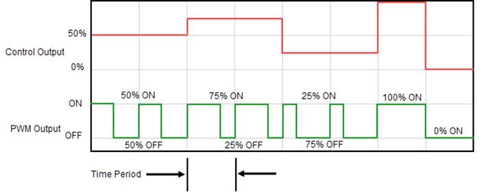

Topic: CL246

| PID Control in CLICK |
Topic: CL246
|
The CLICK PLC, like other controllers, has attributes that are common to any PID control system, but it also has its own features unique to CLICK. Most of the CLICK PID configuration, monitoring and tuning can be done in the PID Configuration and PID Monitor window. But some users would rather have the flexibility to implement this feature in ladder logic and use another user interface such as a C-more HMI to configure, monitor and tune their PID control loops. This help topic is intended to give the user what they need to implement the CLICK PID feature in ladder logic without using those tools.
Each PID Loop requires consecutive C, DS and DF memory areas. All of the PID Loop Configuration parameters are stored in these memory locations.
C Memory Area: 40 Consecutive bits
DS Memory Area: 15 Consecutive Integers
DF Memory Area: 25 Consecutive Floats
PID Address Descriptions
For a complete list and description of each PLC Address used in each PID Loop Configuration and their Nicknames, see the topic PID Address Description.
CLICK utilizes a position PID control algorithm only. The implementation of the PID algorithm in the PLC is shown below.
= Control Output
= Initial Output
= Proportional Gain (P)
= error (SP - PV)
= Sample Rate in seconds
= Reset Time (I) in seconds
= Derivative Gain (D) in seconds
= present sample
= previous sample
The Setpoint (DFn+00) is the value to which the PID Control Loop is trying to drive the PV.
Setpoint Upper and Lower Limits: You may select to limit the allowed upper and lower settings for the Setpoint. This is useful in preventing someone from accidentally entering a value that is outside the process limits.
When enabled, if a Setpoint value is entered outside of the limits, the PLC will automatically change the Setpoint to the limit that is closest to the value entered.
The limits are enabled individually:
Upper Limit enable (Cn+01)
Lower Limit enable (Cn+00)
The limit values must be set if the limit is enabled:
Upper Limit value (DFn+02)
Lower Limit value (DFn+01)
The Raw Process Variable (DFn+11) is the measured value that the PID loop controls. It is directly affected by the process being controlled. The Process Variable (DFn+12) is the filtered Raw Process Variable used by the PID calculation. If the PV filter is not enabled, then the PV is equal to the Raw PV.
PV Upper and Lower Limits
The PV Upper (DFn+23) and Lower (DFn+22) Limits are the expected process range values for the full range of the Control Output. They are used to calculate the Process gain which in turn is used by Autotune to calculate the Proportional Gain tuning constant.
This is not the range of the process measurement device or the PLC input configuration. For example the Input may be a RTD input with a range of -328 to 1562 Deg F. But the Process range for a CO of 0 to 100 may only be 40 to 140 Deg F. The PV Upper and Lower Limits would be 140 and 40 respectively.
PV Filter
A noisy Raw PV can cause a PID loop to become unstable as well as make the loop difficult to tune. The CLICK PLC provides a PV Filter to reduce the high frequency noise in the Raw PV value to provide a clean PV to the PID Controller.
PV Filter(Cn+11): turns on the PV filter.
Filter Constant (DSn+8): the Filter Constant is the percentage of the Raw PV that is passed each PID sample time. The smaller the filter value, the more filtering that will occur. A value of 100 will result in no filtering and 100% of the Raw PV is passed.The default value is 100.

Enabling the PV Filter and entering a small filter value can cause some lag in the PV. This should be taken into account while tuning.
The Error is the difference between the Setpoint and the Process Variable: Error = SP - PV.
Error Squared Option
When the Error Squared (Cn+02) option is selected, the error term is squared (preserving the original sign), before it is used in the PID calculation. This lessens the response to smaller error values, but increases the response to larger errors.
Two situations in which the error squared term might be useful are:
- Noisy PV signal – using a squared error term can reduce the effect of electrical noise on the PV, which will make the control system jittery. A squared error maintains the response to larger errors.
- Non-linear process – some processes (such as chemical pH control) require non-linear controllers for best results.
Error Deadband Option
When the Error with Deadband (Cn+03) option is selected, no control action is taken if the PV is within the specified Error Deadband (DFn+03) around the SP. The error deadband is the same above and below the SP and is in the same units as the PV and SP.
Once the PV is outside of the error deadband around the SP, the entire error is used in the loop calculation.
If Error Squared is enabled, the error will be squared before it is applied to the deadband calculation.
The Control Output (DFn+08) is the result of the PID calculation. It is usually tied to a physical output on the PLC, which is wired to a control device such as a valve actuator.
The Control Output is Read Only when the loop is in Auto. To change the Control Outout, the loop must be in Manual Mode.
The Control Output range is 0 to 100% by default. But it can be changed by setting the Upper Limit(DFn+10) and Lower Limit(DFn+09).
The PID control will not exceed these limits in Auto or Autotuning Mode. The limit values have no effect in Manual mode.
If the Upper Limit is set to zero, the CO will never get above zero and the control loop will not function properly.
PWM Control
PWM (Pulse Width Modulated) control turns the Control Output signal into a series of pulses. The width of the pulse (or duty cycle) is the ratio of ON time to OFF time determined by the Control Output percentage of the Time Period.
PWM is useful when the Control element in the process is not an analog device such as a valve position actuator, but a discrete device such as a heating element. For example, temperature can be controlled by turning the heating element ON and OFF.
This can be accomplished by assigning the Bit Address of a Discrete Output, such as a relay output, to the PWM Control.
Since PWM Control is determined by the type of output, it is enabled in the PID configuration, but unlike most other parameters, it is not modifiable by the Ladder Logic. No Address is assigned to the PWM Enable setting.
Bit Address: The is the address of the discrete output that is tied to the control element in the process. The programmer assigns this.
Time Period: (DSn+07): The total of the ON and OFF time. This value can be 1 to 600 seconds.

The Action (Cn+09) of a control loop is either Direct (forward) acting or Reverse acting.
A Direct acting control loop means that whenever the control output increases, the PV will also increase. For example, if the Control Output drives open a gas valve to a flame control, the temperature will increase as the Control Output increases.
A Reverse acting control loop is one where an increase in the control output results in a decrease in the PV. A common example of this would be a refrigeration system, where an increase in the cooling input causes a decrease in the PV (temperature).
The CLICK PID Algorithm uses Proportional Gain(KP), Integral Time (TI) and Derivative(TD) constants for tuning the control loop.
Proportional Gain (DFn+05)
Proportional Gain, in the equation above is the constant KP and has no units. The value can be 0.01 to 10000. Each sample time (TS), the Error is multiplied by KP and the result is added to the previous CO value. So, the adjustment made to CO is Proportional to the error for that sample.
In some controllers, you can remove the effect of the Proportional term from the calculation by setting P to 0 or a very small number. This is not the case in the CLICK PLC since as seen above in the equation, the KP is used in both the Integral and Derivative terms.
Integral or Reset Time (DFn+06)
Reset time, in the equation is the constant TI and is expressed in seconds. The value can be 0.01 to 6000. Each sample time, the Error accumulated over the time the loop has been running is multiplied by the TS times KP divided by TI . The result (Bias term) is added to the previous CO value. So, the adjustment made to CO is proportional to the Integral Sum of the error.
To remove the effects of the Integral term from the calculation, make the Reset Time very large in the order of 1000 seconds or so.
Freeze Bias (Anti-Windup) (Cn+05)
Freeze Bias, also known as Anti-Windup, is a feature of the CLICK PID that can make your process more stable and recover more quickly from process disturbances. To understand Freeze Bias and Anti-Windup, you must first understand Bias and Reset Windup.
The Bias term is the Integrator portion of the PID calculation. It is the accumulated Error times the Sample Rate divided by the Reset Time. Reset Windup refers to the fact that so long as there is error, this value continues to accumulate and drive CO to its limit.
Refer to the figure below. When there is a large Error caused by a SP change, process disturbance, or as in the example below a lost PV signal, the bias term keeps integrating normally during the lost PV until its upper limit is reached. When the PV signal returns, the bias value is saturated (windup) and takes a long time to return to normal. The loop output consequently has an extended recovery time. Until recovery, the output level is locked at its extreme limit and causes further problems by not allowing the loop to recover quickly.

In the second PV signal loss example, the Freeze Bias feature is enabled. It causes the bias value to freeze when the control output goes to its upper limit. The reset windup is avoided and the output recovery time is much less.
The Freeze Bias will occur when the Control Output has reached the Upper or Lower limit set in the Output tab.
The example shows a large Setpoint change with No Freeze Bias vs Freeze Bias enabled.
No Freeze Bias 
Freeze Bias 
Derivative Gain (DFn+07)
In the equation, Derivative Gain is the constant TD and is expressed in seconds. For each sample time, the difference in the present error and the previous error is multiplied by TD time KP divided by the TS. The result is added to the previous CO. So, the adjustment made to the CO is proportional to the Derivative of the error, or the rate of change of the error since the last sample.
Derivative Gain is useful for reacting quickly to a sudden change in the error. But as a result, it is also negatively affected by high frequency noise in the PV and may cause the CO to be erratic.
To remove the effects of the Derivative term from the calculation, make the Derivative Gain equal to 0.
Derivative Gain Limit
The Derivative Term in the PID calculation is very useful in allowing the control loop to respond quickly to a sudden change in the error. The disadvantage of this is that high frequency noise in the PV signal will be amplified significantly, causing the CO to be erratic.
The Derivative Gain Limit (Cn+04) is a high frequency filter for the Derivative Gain. With it you can limit how much high frequency noise affects the Derivative Term of the calculation.
The Gain Limit Factor (DSn+06) can be 1 to 100, although a value from 8 to 20 is more typical. A value of 100 will essentially apply no filter to the Derivative. As the Limit is reduced, the effect of PV noise on the CO is reduced. A value of 0 is the same as setting the Derivative Gain to 0.
Sample Rate(TS)
PID control is performed as part of the Main Program, but the new CO is calculated when the sampling rate time (DSn+05) has elapsed. Therefore, if the scan time is long, the new CO may not be calculated as quickly as the sample rate setting. The Sample rate can be 100 to 30000 ms.


- PID Stop Mode
- When the PLC Mode is STOP, the CLICK PID control loops stop executing.
- When the PLC Mode shifts from STOP to RUN, CLICK PID control loops begin executing in Manual Mode.
- Manual Mode
CLICK PID control loops shift to Manual Mode when the following conditions are met:
- When the PLC switches from STOP to RUN. This affects all PID control loops.
- When C(n+15) Manual Mode Start Request is turned ON.
- When a PID error occurs.
- Auto Mode
CLICK PID control loops shift to Auto Mode when the following conditions are met:
- When C(n+16) Auto Mode Start Request is turned ON while the PID control loop is in Manual Mode.
- When Autotune is completed.
- When C(n+17) Autotune Mode Start Request is turned off.
- Autotune Mode
CLICK shifts to Autotune Mode when the following conditions are met:
- When C(n+17) Autotune Mode Start Request is turned on while the PID control loop is in Auto Mode.
- See CLICK PID Autotuningfor other conditions necessary to enter Autotune Mode.
Below is a timing chart for all of the PID Modes.

Manual and Auto Mode Transitions
Notice in the chart above that the Manual and Auto Mode Requests are not maintained bits. These bits submit a "request" to the PLC. If there are no errors, then the PLC PID loop is switched to the respective mode and the Mode Indication bit is turned on.
A Bumpless Transfer (Cn+08) refers to the method of switching from Manual Mode to Auto Mode without causing a "bump" in the process by sudden movement of the Control Output.
Mode 1 (OFF): Accomplishes no bump because the SP and PV are made equal, requiring no immediate change in the CO.
Mode 2 (ON): Since the SP is not made equal to the PV, a bump in the CO can occur when the control is switched from Manual to Auto. It is up to the Operator to make changes to the process settings to prevent a bump in the process.
The P, I and D parameters as well as the Sample Rate can be set automatically by using the Autotune features of the CLICK PID. See the PID Autotuning topic for more information.
The CLICK PID Errors are indicated in register DS(n+00). If there is more than one error, the DS register will contain the lowest active error number. When it is cleared, the next lowest error is indicated.
The list of PID Errors can be found in help topic CLICK PID Errors.
The CLICK allows the user to specify alarm conditions that can be monitored for each loop.
Use PV Alarm (Cn+12): these are limit alarms. If the PV passes the limit, the corresponding C-bit is turned on.
Alarm Type
Alarm Limit
Alarm Status Bit
High-High Alarm
DFn+16
Cn+34
High Alarm
DFn+15
Cn+33
Low Alarm
DFn+14
Cn+32
Low-Low Alarm
DFn+13
Cn+31

Use PV Deviation Alarm (Cn+13): Sometimes the PV value is not a concern, but the difference between the PV and SP. You can specify a High Deviation Alarm or High High Deviation Alarm from the SP. When the PV is further from the SP than the programmed Deviation Limit, the corresponding C-bit is turned on. The deviation is the amount above or below the SP.
Alarm Type
Alarm Limit
Alarm Status Bit
High-High Alarm
DFn+18
Cn+36
High Alarm
DFn+17
Cn+35

PV Alarm Hysteresis (DFn+20): The PV Limit Alarms and PV Deviation Alarms are programmed using limit values. When the PV value or deviation exceeds the configured limit, the alarm status bit becomes true. Real-world PV signals fluctuate. As the PV value crosses an alarm limit, its fluctuations will cause the alarm to be intermittent and trigger repeatedly.
The figure below shows how the hysteresis is applied when the PV value goes past a limit and descends back through it.

The alarm activates immediately when the Alarm limit is crossed. But the alarm delays turning off until the PV value has dropped below the limit by the hysteresis amount.
Use PV Rate of Change (Cn+14): When the PV changes faster than a specified rate-of-change limit (DFn+19), the Rate of Change C-bit (Cn+37) is set. The rate-of-change units are PV. Units change per sample time.
As an example, suppose the PV is the temperature for your process, and you want an alarm whenever the temperature changes faster than 15 degrees/minute. Suppose the sample rate is 2 seconds.